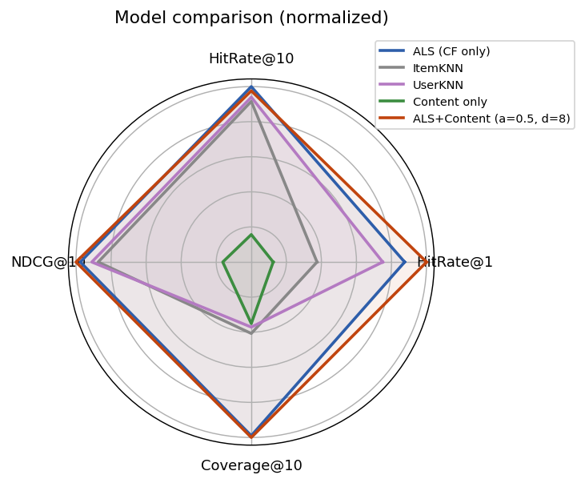
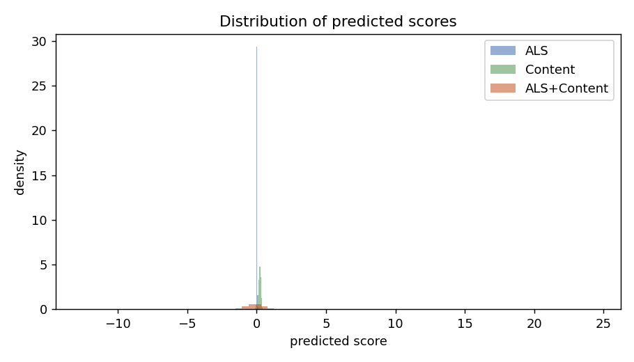
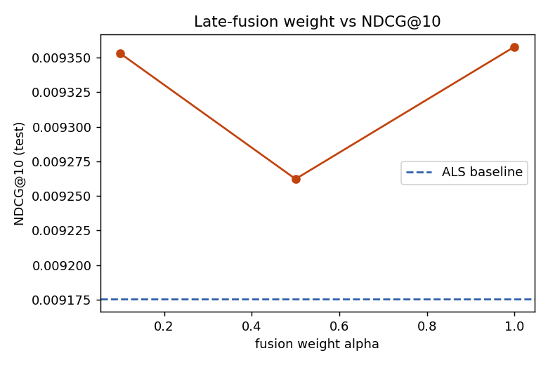
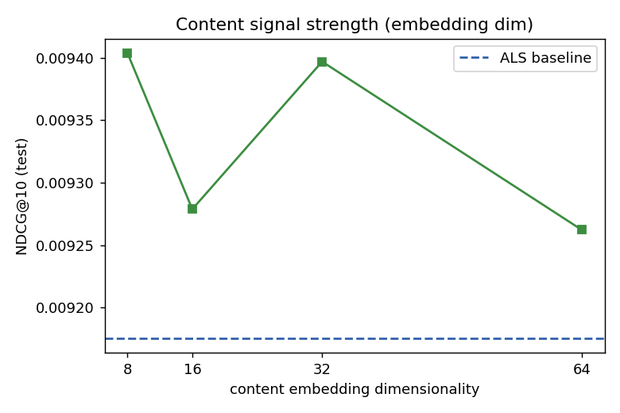
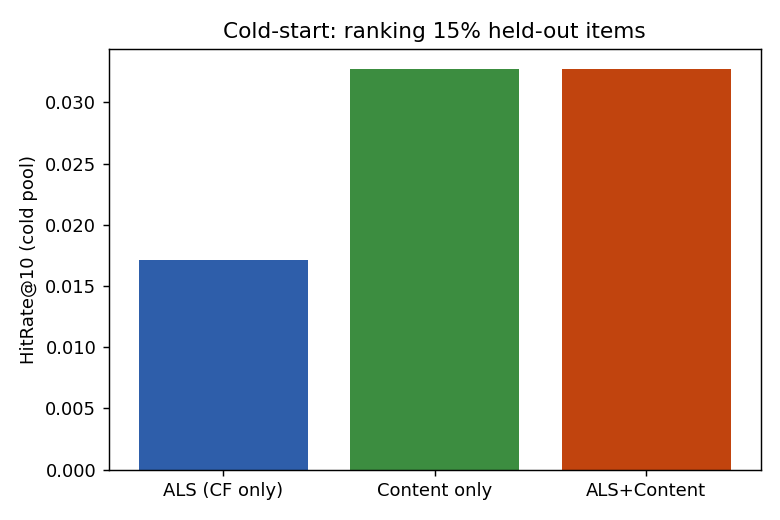

На срезе из 1500 пользователей и 11522 видео VK-LSVD мы сравниваем три CF-базлайна (ALS, ItemKNN, UserKNN) с контент-обогащёнными вариантами, используя нативные 64-мерные контентные эмбеддинги. В протоколе полного ранжирования с временным сплитом сильнейшим методом оказывается ALS. Позднее слияние контента не даёт значимого прироста на тёплом каталоге, но на холодных айтемах контент почти удваивает HitRate@10.
Полный VK-LSVD (~452 ГБ) необработаем локально; эксперименты — на подвыборке up0.001_ip0.001. Контентный эмбеддинг единый (видео+описание+аудио), компоненты упорядочены, поэтому раздельные «текст/изображение» на реальных данных недоступны — вместо них варьируем размерность (8/16/32/64) как силу контентного сигнала. Положительный класс: лайк/репост/сохранение/переход к автору или досмотр ≥70%. Метрики считаются полным ранжированием по каталогу с исключением виденного; α и d подбираются на 30% валидационных пользователей, метрики — на остальных 70%.
| Модель | HitRate@1 | HitRate@10 | NDCG@10 | Coverage@10 |
|---|---|---|---|---|
| ALS (CF only) | 0.0069 | 0.0815 | 0.0092 | 0.0426 |
| ItemKNN | 0.0029 | 0.0747 | 0.0082 | 0.0175 |
| UserKNN | 0.0059 | 0.0766 | 0.0086 | 0.0160 |
| Content only | 0.0010 | 0.0128 | 0.0015 | 0.0151 |
| ALS+Content (a=0.5, d=8) | 0.0079 | 0.0796 | 0.0094 | 0.0430 |




Кривая по α плоская, качество на 8 компонентах не хуже, чем на 64 — контентный сигнал насыщается очень рано.
| Сравнение | Δ NDCG@10 | 95% ДИ | p | значимо |
|---|---|---|---|---|
| ItemKNN vs ALS | -0.0010 | [-0.0039, 0.0022] | 0.524 | нет |
| UserKNN vs ALS | -0.0006 | [-0.0032, 0.0020] | 0.652 | нет |
| Content only vs ALS | -0.0076 | [-0.0100, -0.0056] | 0.000 | да |
| ALS+Content (a=0.5, d=8) vs ALS | +0.0002 | [-0.0006, 0.0012] | 0.594 | нет |
Прячем 15% айтемов из обучения ALS — у него не остаётся сигнала. Контент использует эмбеддинги для всех айтемов и кратно выигрывает.
| Модель (холодный пул) | HitRate@10 | NDCG@10 |
|---|---|---|
| ALS (CF only) | 0.0171 | 0.0052 |
| Content only | 0.0328 | 0.0103 |
| ALS+Content | 0.0328 | 0.0103 |

Применять контентные эмбеддинги как cold-start / long-tail сигнал, а не как глобальный ре-ранкер. На тёплом каталоге основным ранжировщиком оставить ALS; контентную ветвь включать для айтемов с недостаточной историей. Достаточно первых ~8 компонент эмбеддинга — это снижает стоимость хранения и инференса.